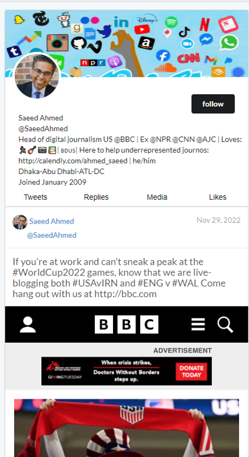

About me
EatifyPos; https://github.com/yiqun12/eatifyPos

EatifyPos is a web-based point-of-sale platform that offers online ordering services for dine-in and takeout orders, with additional restaurant management features. This platform enables customers to browse menus, place orders, and pay securely online, while streamlining the ordering, payment, and kitchen processes for business owners. Real-time messaging, email confirmations, and customization options are provided, making the platform efficient and effective. The platform is responsive on PC and compatible with 95% of mobile devices. It is also capable of seamlessly sending order information to kitchen thermal printers in real-time. Other key features of my platform include: the processing of verbal orders, remote control for the cash drawer, management of point-of-sale (POS) terminals, and the provision of summaries of revenue, tips, and taxes.
Deception Awareness and Resilience Training (DART) Explore Section; https://dart.socialsandbox.xyz/
The Deception Awareness and Resilience Training (DART) platform has received $5 million in funding from the
NSF to support the mission of promoting awareness of the risks and scams associated with social media. As part
of this effort, I designed and developed the whole Explore section within the DART Learn module to provide
older adults with examples on how to recognize malicious internet trolls and protect themselves from online
deception.
